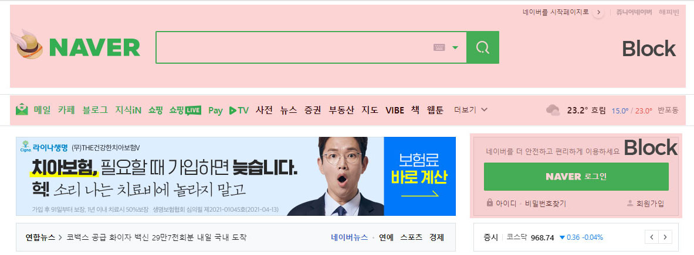
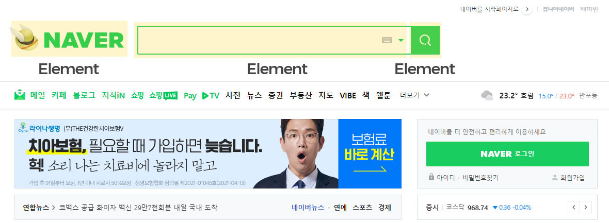
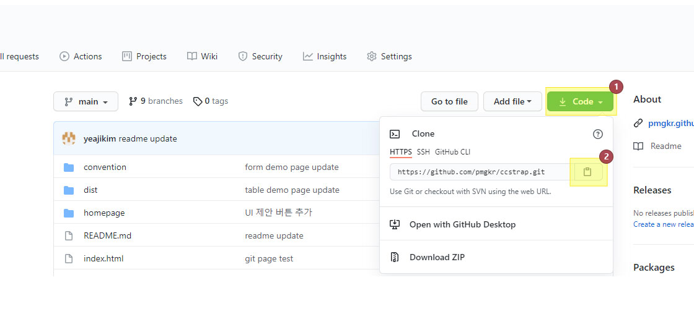
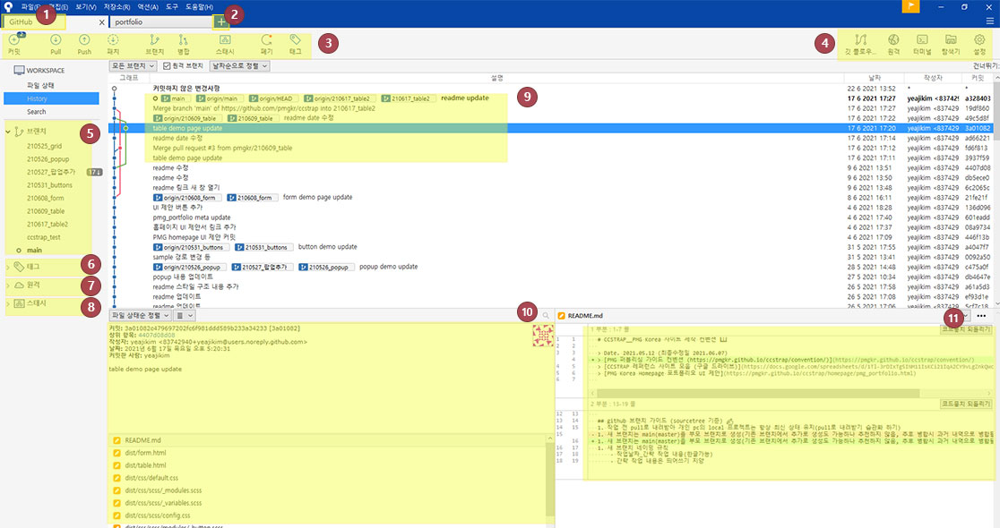
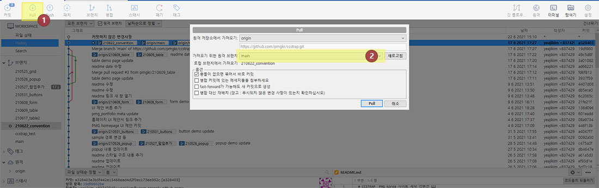
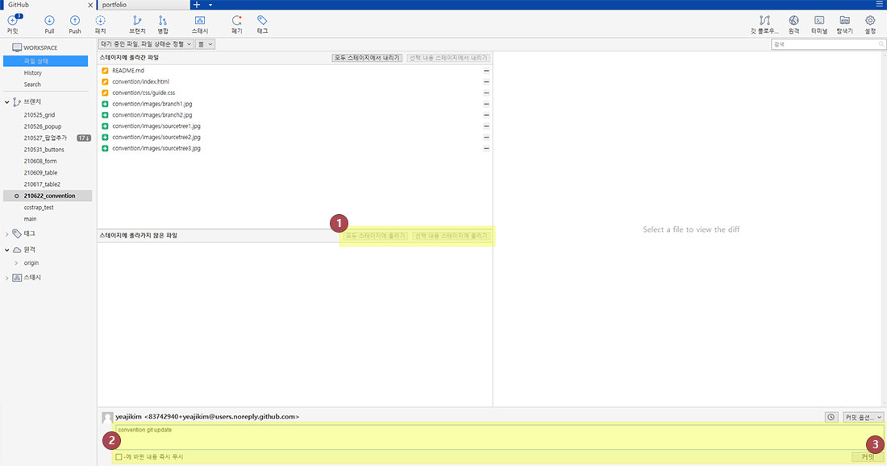
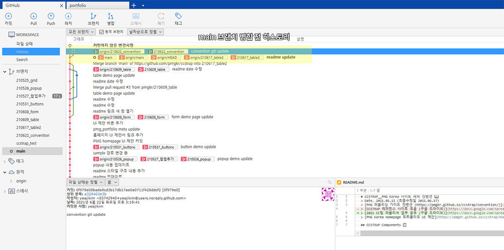
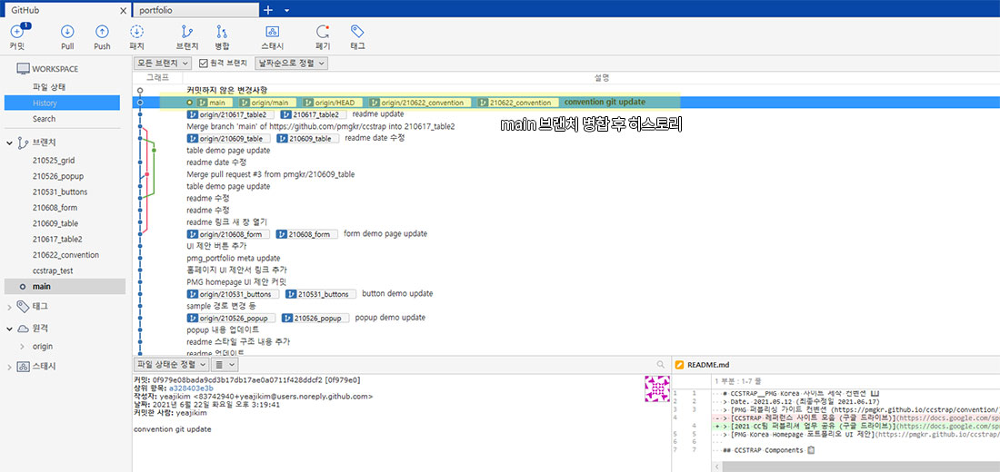

Guide Chapter
1. HTML Convention
HTML 기본 스타일
태그명, 속성명, 속성값 등에 모두 소문자를 사용한다. 속성값에는 반드시 큰따옴표 ("")를 사용한다. 들여쓰기(depth)는 공백(space) 4칸을 사용한다.
<!-- Bad -->
<A HREF='/' CLASS='logo'>logo</A>
<!-- Good -->
<a href="/" class="logo">logo</a>
HTML 문서형식 지정
HTML 문서 타입은 HTML5 DOCTYPE을 명시하며, lang은 사이트의 기본 언어를 지정해준다. 국가별 코드 리스트
ie는 10이상 대응(Internet Explorer 11 지원 종료 및 2022년 폐기 수순)하며 모든 문서의 인코딩은 utf-8을 기준으로 사용한다.
인터넷 익스플로러에서는 메타태그를 사용해 페이지가 특정 버전에 맞게 렌더링 되도록 지정한다. 상황에 따라 매번 다르게 렌더링 되는 것을 방지 하기 위해 최신 Edge 모드를 사용한다.
<!DOCTYPE HTML>
<html lang="ko">
<head>
<meta charset="utf-8">
<meta http-equiv="Content-Type" content="text/html; charset=utf-8">
<meta http-equiv="X-UA-Compatible" content="IE=edge">
<meta name="viewport" content="initial-scale=1.0, width=device-width">
<title>Title</title>
<meta name="keywords" content="">
<meta name="description" content="">
<meta property="og:type" content="website">
<meta property="og:title" content="Title ">
<meta property="og:description" content="">
<meta property="og:url" content="">
<meta property="og:image" content="">
<link rel="icon" href="/favicon.ico?1" type="image/x-icon">
<link rel="shortcut icon" href="#" type="image/x-icon">
</head>
<body>
<div class="wrap">
<header>
<h1 class="logo"><a href="/">프로젝트명 바로가기</a></h1>
</header>
<main>
...
</main>
<footer>
...
</footer>
</div>
</body>
</html>
Boolean 속성은 값을 따로 명시하지 않는다.
selected,disabled,checked 등의 Boolean 속성은 값을 따로 명시하지 않는다.
<input type="text" disabled="true"> // Bad
<input type="text" disabled> // Good
<input type="checkbox" value="1" checked="true"> // Bad
<input type="checkbox" value="1" checked> // Good
<select>
<option value="1" selected="true">1</option> // Bad
</select>
<select>
<option value="1" selected>1</option> // Good
</select>
h1 태그는 사이트 로고에 한 번만 선언한다.
h1 태그는 프로젝트 내 사이트 로고를 나타낼 때 한 번만 선언하며, 로고는 대체 텍스트를 제공한 뒤 로고 이미지는 스타일의 background-image로 선언 파일 이미지는 SVG 파일로 작업한다. (검색엔진 최적화 및 로고 깨짐 방지)
<h1 class="logo_default">
<a href="/" class="logo_naver"><span class="blind">네이버</span></a>
</h1>
목적에 맞는 HTML 태그를 사용한다.
목적에 맞는 HTML 태그를 사용한다. 타이틀을 나타내는 경우 <h>태그를, 문단을 나타내는 경우 <p>태그를, 링크 이동을 하는 경우 <a>태그를, 이벤트가 필요한 경우 <button> 태그를 사용한다.
또, HTML5의 시멘틱 태그 <header>, <nav>, <section> 등을 사용한다. 시멘틱 태그를 사용하여 마크업하면 웹 접근성, 코드 재사용, 검색엔진 최적화 (SEO) 등에 도움이 된다.
CSS/Javascript 파일을 불러올 때 type을 명시하지 않는다.
HTML5 스펙에 따르면 CSS나 자바스크립트 파일을 불러올 때 type 속성의 기본값이 text/css, text/javascript로 지정되어 있으므로 속성값을 명시하지 않아도 된다.
가급적 CDN 사용을 지양하고, 가능하다면 minify로 관리한다.
<!-- Bad -->
<link href="/css/guide.css" rel="stylesheet" type="text/css">
<!-- Good -->
<link href="/css/guide.css" rel="stylesheet">
<!-- Bad -->
<script src="/js/jquery-3.5.1.min.js" type="text/javascript"></script>
<!-- Good -->
<script src="/js/jquery-3.5.1.min.js"></script>
2. CSS Convention
CSS 기본 스타일
클래스명은 BEM 방식으로 선언하며, 스타일 지정 작업을 위한 아이디 선언은 지양한다.
가독성을 위해 선언 블록을 여는 중괄호 ({) 앞에는 공백(Space) 1문자를 공백으로 넣고, 닫는 중괄호(})는 새로운 행에 배치한다.
.header {
...
&__logo {
...
}
}
다중 선택자 사용 시 한 줄에 선택자 하나씩 표기하며, 다중 스타일은 한 줄에 속성 하나씩을 표기한다.
/* Bad */
.section, .section_wide, .section_wide:nth-child(n) {
...
}
/* Good */
.section,
.section_wide {
font-size: 16px;
margin: 15px;
padding: 15px;
}
CSS 방법론 BEM 방식 (Naming Convention)
BEM은 Block, Element, Modifier를 뜻한다.
원래 기존 구조는 __(double underbar) 와 --(double hyphen)로 각각을 구분하는데 너무 길어질 것과 하이픈 사용 시 더블클릭으로 클래스를 한 번에 선택할 수 없기때문에
ccstrap에서는 각각의 연결을 __(double underbar) 두개로 구분하기로 하였다.
BEM은 기본적으로 ID를 사용하지 않으며, class만을 사용하여 선택자의 이름을 가능한 명확하게 만드는 것을 목표로 한다.
클래스 이름을 정할 때 가장 중요한 것은 '어떻게 보이는가'가 아니라 '어떤 목적인가'이다. 예를 들어, 에러 메세지를 띄우는 p태그의 경우 .red가 아닌, .error라는 이름으로 명명하는 것과 같다.
1-1. 블록_Block
- 재사용 가능한 기능적으로 독립적인 페이지 구성 요소를 블럭이라고 부른다.
- 형태(red, big)가 아닌 목적(menu, button)에 맞게 결정한다.
- 블록은 환경에 영향을 받지 않아야 한다. 즉, 여백이나 위치를 설정하면 안된다.
- 블록은 서로 중첩해서 작성할 수 있다. 단어 사이는
_(underbar)하나로 연결한다. 예 )nav__itemsearch_form__titletab__item__active
1-2. 요소_Element
- 요소는 블럭을 구성하는 단위로 블록 안에서 특정 기능을 담당하는 부분을 말한다.
- blcok__element 형태로 사용한다. (더블 언더바)
- 형태(red, big)가 아닌 목적(list, item, text, title)에 맞게 결정한다.
- 요소는 중첩해서 작성 할 수 있다.
- 요소는 블록에 의존하는 형태기 때문에 블록의 부분으로만 사용할 수 있고, 다른 요소의 부분으로 사용할 수 없다. 또한 자신이 속한 블록 내에서만 의미를 가지기 때문에 블럭 안에서 떼어다 다른 데 쓸 수 없다.
1-3. 수식어_Modifier
- 블록이나 요소의 속성을 나타낸다. 모양(color, size...)이나 상태(checked, disabled, active ...)를 정의하는데 사용된다.
- 기존 알려진 형태로는
block__element--modifier로 사용하지만 위에 서술했던 바와 같이 ccstrap에서는block__element__modifier로 더블 언더바를 사용하여 구분 짓는다. - 수식어에는 boolean type과 key-value type이 있다.
- boolean type(불리언 타입) : 수식어의 값이 true라고 가정하고 사용한다. 예 )
form__button__disabledform__button__focused - key-value type(키-밸류 타입) : key, value를 언더바로 연결하여 성질_내용을 표시한다. 예 )
color_reduser_adminuser_vip
- boolean type(불리언 타입) : 수식어의 값이 true라고 가정하고 사용한다. 예 )
- 수식어는 블록이나 요소의 속성을 나타내기 때문에 단독으로 사용할 수 없다.
1-4. 혼합 사용_Mix
block1block2__element형태로 사용할 수 있다.block1은 독립적으로 유지하고,block2__element로 여백이나 위치 등의 스타일을 지정할 수 있다.
<div class="header">
<div class="button button--state-success"></div>
</div>
BEM 방식은 클래스 네임만으로 마크업 구조를 파악하고, 컴포넌트를 블록 레벨로 나누워 쉽게 관리 및 유지보수, 다인 작업 시 편리함을 주기 위해 도입되었다.
숫자 0 값 이후에는 불필요한 단위를 작성하지 않는다.
/* Bad */
margin: 15px 0px 25px 0px;
padding: 0px;
/* Good */
margin: 15px 0 25px 0;
padding: 0;
flex: 0px; // flex-basis 컴포넌트의 경우 단위가 필요함
색상 표현
16진법으로 색상을 표현할 경우 다음과 같이 가능하다면 3글자로 축약하여 작성한다.
/* Bad */
color: #aabbcc;
background: #000000;
/* Good */
color: #abc;
background: #000;
스타일 작성 시 클래스를 사용하며, 불필요한 !important를 남발하지 않는다.
스타일 지정을 위한 선택자 사용 시 무조건 클래스를 사용한다. 아이디는 유니크한 속성이기 때문에 재사용할 수 없고, 선택자 우선순위가 매우 높기 때문에 스타일 작성자가 의도한대로 동작하지 않을 수 있다. 아이디 사용은 문서 내 링크 이동 등을 위한 경우에만 사용한다. 선택자 우선순위 관련 문서 !important는 외부 CSS를 재정의할 때만 사용하고, 사이트 CSS에서는 사용을 지양한다. 마찬가지로 인라인 스타일 역시 지양한다.
/* Bad */
#header {
position: fixed !important;
}
/* Good */
.header {
position: fixed;
}
@import 대신 <link>를 사용한다.
@import의 로딩속도가 <link>보다 훨씬 느리기 때문에 <link>를 사용한다.
만약 <link> 내에 @import를 사용할 경우 @import한 자원을 받는 동안 브라우저는 CSS를 처리할 수 없어 로딩 시간이 길어진다.
또한 해당 CSS의 다운로드 순서로 인해 문제가 생겼을 경우 추적이 힘들다. @import에 관한 실험 결과 문서_stevesouders.com
3. Sass Convention
Sass 기본 스타일
.scss문법을 사용한다. 들여쓰기를 기반으로 한 .sass 문법 대신 CSS에서 사용하는 모든 문법과 기능이 호환되는 .scss 문법을 사용하도록 한다.
/* sass 문법 */
.header
width: 1000px
border: 1px solid #000
span
padding: 10px 20px
/* scss 문법 */
.header {
width: 1000px;
border: 1px solid #000;
span {
padding: 10px 20px;
}
}
선언 순서
속성, @include, 중첩 선택자 순으로 선언한다. @include 선언 이후에는 한 줄 줄바꿈 후 작성한다.
.main_sec__title {
background: #000;
border: 1px solid #ccc;
@include transition(background .5s ease-in-out)
&__a {
padding: 10px;
}
}
변수명은 스네이크 케이스를 사용한다.
변수명은 _(underbar)를 사용하는 스네이크 케이스(snakecase)를 사용한다.
/* Bad */
$mainColor: #f00;
$main-color: #f00;
/* Good */
$main_color: #f00;
$sub_color: #000;
컴파일은 코알라(Koala)를 사용한다.
.sass 컴파일 프로그램은 코알라(Koala)를 사용한다. 코알라는 간편한 사용법과 무료로 사용가능하며, 맥과 윈도우, 리눅스까지 모든 플랫폼을 지원한다.
컴파일된 .css 파일은 가능하다면 코드 압축(minify)하여 서버에 업로드한다.
폴더 구조
/Site root
ㄴ dist
ㄴ css
- scss
ㄴ fonts
ㄴ js
ㄴ plugin(lib)
ㄴ images (static)
ㄴ icon
ㄴ img (site)
ㄴ *.html
파일 구조
각 페이지의 헤드에 삽입하는 스타일은 2개의 스타일이다. 공통 스타일의 default.css 와 해당 페이지 컨텐츠의 스타일을 담은 main.css (혹은 sub.css ...)를 선언한다. <head>에서 스타일 선언 처리는 조건문이나 스크립트 등을 이용해 처리한다.
CSS
ㄴ default.scss (=default.css)
- _reset.scss
ㄴ config.scss
ㄴ global.scss (main/subpage css에도 import해서 사용)
- _fonts.scss
- _variables.scss
- _mixin.scss
- _grid.scss
ㄴ modules.scss
- _form.scss
- _button.scss
- _board.scss (_pagination 포함)
- _tooltip.scss
- _popup.scss
...
- header.scss
- footer.scss
ㄴ responsive.scss (tablet, mobile, widescreen ...)
ㄴ 페이지 별 스타일 (main.css / sub.css / order.css ...)
- global.scss
global 의 _variables는 사이트 전용 변수를 작성한다.
페이지 별 스타일에 global을 import해야 _mixin 사용이 가능하다.
Grid Layout
- 모바일 ( ~ 480px)
- 컬럼 수 : 6
- 그리드 적용 : 분기점보다 작거나 같으면 적용
@media screen and (max-width:480px) - 클래스 : .col_sm_1 ~ .col_sm_6 (_pull, _push, _offset)
- 태블릿 (481 ~ 768px)
- 컬럼 수 : 12
- 그리드 적용 : 분기점보다 작거나 같으면 적용
@media screen and (max-width:768px) - 클래스 : .col_md_1 ~ .col_md_12 (_pull, _push, _offset)
- 작은 데스크탑 or 큰 태블릿 (769 ~ 1199px)
- 컬럼 수 : 12
- 그리드 적용 : 분기점보다 작거나 같으면 적용
@media screen and (max-width:1199px) - 클래스 : .col_lg_1 ~ .col_lg_12 (_pull, _push, _offset)
- 데스크탑 (1200 ~ 1920px) <default>
- 컬럼 수 : 12
- 그리드 적용 : 기본 적용 (다른 분기점에 속하지 않을 때)
- 클래스 : .col_xl_1 ~ .col_xl_12 (_pull, _push, _offset)
- 와이드 (1921px ~)
- 컬럼 수 : 12
- 그리드 적용 : 분기점보다 크면 적용
@media screen and (min-width:1921px) - 클래스 : .col_wide_1 ~ .col_wide_12 (_pull, _push, _offset)
4. Javascript convention
Javascript 기본 스타일
소스파일의 이름은 알파벳 소문자, 하이픈, 언더바로만 작성한다. 소스파일의 인코딩은 UTF-8로 작성한다.
들여쓰기는 4칸의 공백(space)를 통해 들여쓴다. 줄 공백은 2줄 이상 연속으로 사용하지 않는다. 값을 할당할 때 큰 따옴표 " "가 아닌 작은 따옴표 ' '를 사용한다.
// bad
const name = "Capt. Janeway";
// bad - template literals should contain interpolation or newlines
const name = `Capt. Janeway`;
// good
const name = 'Capt. Janeway';
자바스크립트 컨벤션 참조__Airbnb javascript style guide(번역본)
변수 (Variables)
- 한 줄에 하나의 변수만을 선언하며, sass와 마찬가지로 자바스크립트 변수또한
_(underbar)를 사용하는 스네이크 케이스(snakecase)를 사용한다. - 변수를 선언할 때는
const나let을 사용한다. (var을 사용한 무분별한 전역변수 방지) - 하나의 변수 선언, 할당에는 하나의
const나let을 사용한다.// bad const items = getItems(), goSportsTeam = true, dragonball = 'z'; // good const items = getItems(); const goSportsTeam = true; const dragonball = 'z';
중괄호
- 중괄호는 하나의 구문만을 포함하고 있더라도 모든 제어문(i.e. if, else, for, do, while..)에 사용되어야 한다.
- if문의 경우, 하나의 구문만 포함하는 경우 중괄호를 생략하고 같은 라인에 구문을 작성할 수 있다.
- 여러 줄의
if와else문을 사용할 때에는else를if블록의 닫는 중괄호와 같은 줄에 둔다.// bad if (condition) alert('Hello, world!'); // No for (var i=0; i<foo.length; i++) bar(foo[i]); // Yes for (var i=0; i<foo.length; i++) { bar(foo[i]); } if (condition) alert('Hello, world!'); if (condition) { ... } else { ... } - 중괄호
{ }로 묶어서 코드 블록을 나누는 방법이 가장 가독성이 좋기 때문에 중괄호로 묶는 것을 추천한다. - 중괄호 앞에는
1칸의 공백(space)을 추가해준다.
함수 (Function)
- 함수는 접두어로
fn_을 사용하며, lowerCamelCase로 표기한다.function fn_foo() { ... } const fn_foo = function () { ... }; const fn_short = function longUniqueMoreDescriptiveLexicalFoo() { ... }; - 즉시 실행함수는 함수를 괄호로 감싼다.
// bad !function()) { console.log("Welcome to the Internet. Please follow me."); }(); // bad (function() { console.log("Welcome to the Internet. Please follow me."); }()); // good (function() { console.log("Welcome to the Internet. Please follow me."); })(); - 함수 이외의 블록(if, while) 안에서 함수를 선언하지 않는다.
- 절대 매개변수 이름을
arguments라고 짓지 않는다. 함수 스코프에 전해지는arguments 객체의 참조를 덮어버린다.
배열 (Array)
- 배열을 생성할 때는
Array 생성자가 아닌 리터럴 구문으로 생성한다.// bad const items = new Array(); // good const items = []; - 배열에 직접 값을 할당하지 않고,
Array.push를 사용한다.const someStack = []; // bad someStack[someStack.length] = 'abracadabra'; // good someStack.push('abracadabra'); - 유사 배열 객체(array-like object)를 배열로 변환할 때에는
Array.from을 사용한다.// 유사 배열 객체를 변환하여 배열을 생성한다. Array.from({length:2, 0: 'a', 1:'b'}); // (2) ["a", "b"] // 이터러블을 변환하여 배열을 생성한다. 문자열은 이터러블이다. Array.from('hello'); // (5) ["h", "e", "l", "l", "o"]
객체 (Objects)
- 객체를 생성할 때에도 리터럴 문법을 사용한다. 객체의 이름은 lowerCamelCase로 표기한다.
- 메서드는 단축 구문을 사용한다.
// bad const atom = { value: 1, addValue: function (value) { return atom.value + value; }, }; // good const atom = { value: 1, addValue(value) { return atom.value + value; }, };
클래스 (Class)
- 클래스나 생성자의 이름은 PascalCase로 표기한다.
// bad function user(options) { this.name = options.name; } const bad = new user({ name: 'nope', }); // good class User { constructor(options) { this.name = options.name; } } const good = new User({ name: 'yup', }); - prototype을 직접 조작하지 않고 class를 사용한다.
- 상속은 extends를 사용한다.
instanceof를 파괴하지 않고 프로토타입 상속을 하기 위함// bad const inherits = require('inherits'); function PeekableQueue(contents) { Queue.apply(this, contents); } inherits(PeekableQueue, Queue); PeekableQueue.prototype.peek = function () { return this.queue[0]; }; // good class PeekableQueue extends Queue { peek() { return this.queue[0]; } }
문자열 (String)
- 문자열을 선언할 때는 작은 따옴표
' '를 사용한다.// bad const name = "Capt. Janeway"; // bad - template literals should contain interpolation or newlines const name = `Capt. Janeway`; // good const name = 'Capt. Janeway'; - 절대로 문자열에
eval()함수를 사용하지 않는다.eval함수를 통해 사용자로부터 입력받은 콘텐츠를 실행하는 것은 보안에 매우 취약하다.- 함수를 통해 실행되는 코드는 최적화가 되지않아 처리 속도가 느리다.
- 가독성이 떨어져 유지보수에 취약하며 브라우저 가비지 컬렉션의 대상이 된다.
5. Git
Git 소개
Git(깃)은 형상 관리 도구(Configuration Management Tool) (혹은 버전 관리 시스템(Version Control System)이라고도 한다.)의 한 종류이다. 작업을 할 때 파일을 복사, 백업, 저장 등을 하는 것을 버전 관리라고 한다. 여기서 버전 관리는 두 가지로 나눠볼 수 있다.
- 클라이언트 _ 서버 모델
- 하나의 중앙 서버가 존재하며, 여러 클라이언트들은 중앙 서버에서 각자 맡은 파트만 가져와서 작업하고, 다시 중앙으로 통합하는 것을 말한다.
- 대표적 시스템으로
CVS,Subversion(SVN)등이 있다.
- 분산 모델
- 하나의 중앙 서버가 존재하지만, 여러 클라이언트들은 각자의 컴퓨터 저장소에 중앙 서버의 전체 사본을 가지고 작업하는 것을 의미한다.
- 대표적 시스템으로
Git이 있다.
- SVN과 Git의 차이점은?
- Git이 SVN과 다른 점은 분산형 관리 시스템이라는 것이다.
- SVN은 중앙 서버에 소스코드와 히스토리를 저장하는 것과 달리, Git은 소스코드를 여러 컴퓨터와 저장소에 분산해서 저장한다. 그렇기때문에 중앙 서버에 장애가 발생해도 로컬 저장소에 커밋할 수 있으며, 로컬 저장소를 이용하여 중앙 저장소의 복원도 가능하다.
- 사본을 로컬에서 관리하기 때문에 Git이 SVN보다 훨씬 빠르다는 장점이 있다.
Git의 필요성
- 소스코드를 주고 받을 필요없이 같은 파일을 여러 명이 동시에 작업하는 병렬 개발이 가능하다.
- 즉, 브랜치를 생성하여 개발한 뒤 메인 브랜치와 병합(Merge)해 개발을 진행할 수 있는 것이다.
- 분산 관리 시스템이기 때문에 인터넷이 연결되지 않은 로컬에서도 개발을 진행할 수 있으며, 중앙 저장소가 날아가도 롤백(Roll back)해 데이터를 다시 원상복구 시킬 수 있다.
- 팀 프로젝트를 진행할 때도 좋지만, 개인 프로젝트를 진행할 때도 프로젝트 버전관리 및 패치 배포 과정도 간단해져 사용하기 좋다.
Git과 Github의 관계
- Git : 형상 관리 도구 (버전 관리 시스템)
- 프로젝트를 형상 관리 도구를 이용해 소스 코드를 복제 및 추가/ 수정 작업을 진행한다.
- 형상 관리 도구를 사용하면 특정 시점으로 되돌리거나, 특정 시점의 변경 사항을 취소하거나, 여러 버전의 소스 코드를 비교하는 일이 가능하다.
- Github : 형상 관리 도구(버전 관리) 웹호스팅 서비스
- 협업하고 있는 코드를 저장할 서버가 필요하다.
- 버전 관리 시스템을 지원하는 웹호스팅 서비스의 기능을 통해 push, pull request 같은 이벤트에 반응해 자동으로 작업(배포)을 실행하게 한다.
- ex)
GitHub,GitLab,BitBucket
- Git GUI : Git GUI(Graphic User Interface)의 약자로 초보자가 명령이나 작업을 쉽게 할 수 있도록 히스토리를 시각화하여 도와주는 도구다.
- ex)
Github desktop,Source Tree,GitKraken,SmartGit등의 툴이 있다.
- ex)
Git 기본 용어들
- Repository(저장소) : 저장소는 히스토리, 태그, 소스의 가지치기 혹은 브랜치에 따라 버전을 저장한다. 저장소를 통해 작업자가 변경한 모든 히스토리를 확인할 수 있다.
- Working Tree : 저장소를 어느 한 시점을 바라보는 작업자의 현재 시점
- Staging Area : 저장소에 커밋하기 전에 커밋을 준비하는 위치
- Commit : 현재 변경된 작업 상태를 점검을 마치면 확정하고 저장소에 저장하는 작업
- Head : 현재 작업중인 브랜치(Branch)를 가리킨다.
- Branch(가지/분기점) : 가지 또는 분기점을 의미하며, 작업을 할 때 현재 상태를 복사하여 Branch에 작업을 한 후에 작업이 완료되었다면 메인 브랜치에 병합(Merge)한다.
- Merge(병합) : 다른 브랜치의 내용을 현재 Branch로 가져와 합치는 작업을 일컫는다.
Git 주요 명령어
- git init : 깃 저장소를 초기화한다. 저장소나 디렉토리 안에서 이 명령을 실행하기 전까지는 그냥 일반 폴더이다. 이것을 입력한 후에야 추가적인 깃 명령어들을 줄 수 있다.
- git help : 명령어를 잊어버렸다면 커맨드 라인에 "git help"를 쳐보자. 그럼 21개의 가장 많이 사용하는 깃 명령어들이 나타난다. 좀 더 자세하게 “git help init”이나 다른 용어를 타이핑하여 특정 깃 명령어를 사용하고 설정하는 법을 이해할 수도 있다.
- git status : 저장소 상태를 체크한다. 어떤 파일이 저장소 안에 있는지, 커밋이 필요한 변경사항이 있는지, 현재 저장소의 어떤 브랜치에서 작업하고 있는지 등을 볼 수 있다.
- git clone : 원격 저장소의 저장소를 내 local에서 이용할 수 있게 그대로 복사해 가져온다.
- git add : 이 명령이 저장소에 새 파일들을 추가하진 않는다. 대신, 깃이 파일들을 지켜보게 한다. 파일을 추가하면, 깃의 저장소 “스냅샷”에 포함된다.
- git commit : 깃의 의미있는 수정 작업이 끝났을 때 마침을 알리는 작업이다. 보통 “git commit -m “Message hear.” 형식으로 사용한다. -m은 명령어의 다음 부분을 메세지로 남긴다는 뜻이다.
- git push : 로컬 컴퓨터에서 작업하고 커밋을 깃허브에서 온라인으로도 볼 수 있기를 원한다면, 이 명령어로 깃허브에 변경사항을 "push"한다.
- git pull : 로컬 컴퓨터에서 작업할 때, 저장소의 변경된 내용을 로컬(내 컴퓨터) 저장소에 적용하는 작업이다.
- git log : 커밋 내역을 확인해보고 싶을 때 사용하는 명령어이다.
- git branch :여러 협업자와 작업하고 자신만의 변경을 원한다면 이 명령어로 새로운 브랜치를 만들고, 독립적인 공간을 만든다. 새 브랜치를 “hello”로 지정하고 싶다면 "git branch hello"라고 쓸 수 있다.
- git checkout : 독립된 작업 공간인 브랜치를 자유롭게 이동할 수 있다. 만약 master 브랜치를 들여다 보고 싶으면, git checkout master를 사용할 수 있다.
- git merge : 브랜치에서 작업을 끝내고, 모든 협업자가 볼 수 있는 master 브랜치로 병합할 수 있다. "git merge hello"라고 입력한다면 hello브랜치에서 만든 모든 변경사항을 master로 추가한다.
SourceTree (Git GUI Tool)
Git을 터미널에서 CLI(Command Line Interface) 환경에서 사용할 수도 있지만, GUI(Graphic User Interface) 환경에서도 보다 손쉽게 사용할 수 있다.
앞에서도 서술했듯이 Github desktop, Source Tree, GitKraken, SmartGit 등의 툴이 있는데 이 컨벤션은 Sourcetree를 소개한다.
소스트리(Sourcetree)는 Jira, Trello를 제작, 운영하는 Atlassian 이라는 회사에서 만든 프로그램으로 Windows와 Mac OS를 지원하고 있습니다.
GIthub Repository Clone
로컬이 아닌 원격 저장소(Remote Repository)를 로컬로 Clone하여 사용하는 방법입니다. 먼저 Github에서 Clone할 저장소(Repository)의 주소를 복사합니다.
Code또는Clone or Download버튼을 클릭한다.- 클립보드 카피 버튼을 클릭한다. 클릭하게되면 클립보드에 해당 주소가 복사됩니다.
클립보드 카피 버튼을 클릭한 뒤 소스트리를 실행합니다.
- 아직 등록된 프로젝트가 없다면
Clone탭을 클릭, 기존 프로젝트가 등록되어있다면 새로운 탭을 생성한 뒤Clone탭을 엽니다. - 클립보드에 저장된 주소를 붙혀넣는다. (
Ctrl + V) - 클립보드에 주소를 붙혀넣으면 3번과 4번 모두 자동으로 진행되지만, 3번의 탐색버튼을 누르면 로컬 PC에 해당 프로젝트를 어디에 저장할 지 경로를 직접 지정할 수 있습니다.
- 이 Git 연결에 대한 고유 명칭입니다. 임의로 지정할 수 있습니다.
- 클론 버튼을 누르면 리포지토리(저장소)가 클론되어 로컬에 저장됩니다.
Sourcetree UI 소개
- 프로젝트 탭. 하나의 원격, 로컬 저장소를 한묶음으로 보여준다.
- 새로운 프로젝트 탭을 생성한다.
- 자주 사용하는 Git 명령어 버튼들
- 커밋(Commit) : 스테이지에 올린 파일들을 한묶음으로 스냅샷으로 저장
- 풀(Pull) : 원격저장소(Remote Repository)에 있는 모든 커밋을 다운로드 받는다.
- 푸시(Push) : 로컬저장소(Local Repository)에 있는 커밋을 원격저장소(Remote Repository)에 업로드 한다.
- 패치(Patch) : 원격저장소에 저장되어 있는 내용을 다운로드 받기 위해 먼저 변경된 내용이 있는 지 새로고침
- 브랜치(Branch) : 브랜치 관리 (생성, 삭제 가능)
- 병합(Merge) : 각각의 브랜치를 하나로 병합
- 스태시(Stash) : 작업하던 도중 브랜치를 바꾸거나 할 때 Tracked 상태인 파일들을 임시저장
- 태그(Tag) : 보통 배포나 특정 지점 등의 태깅을 위해 사용
- Git을 사용하기 위한 편의 기능 버튼들
- 깃플로우 : Git-flow로 사용할 브랜치 명칭을 보여준다.
- 원격 : 연결된 원격저장소(Remote Repository)를 연다.
- 터미널 : CLI를 실행할 수 있게 명령창 또는 터미널 창을 연다.
- 탐색기 : 윈도우 탐색기를 연다.
- 설정 : 설정창을 연다.
- 로컬 저장소의 브랜치 리스트
- 태그 리스트
- 원격 저장소 브랜치 리스트
- 임시 저장 스태시 정보
Github 브랜치 가이드 (Sourcetree 기준)
- 작업 전
패치(Patch)버튼을 눌러 원격 저장소에 저장된 내용을 다운로드(Pull) 받기 전 변경된 내용이 있는 지 새로고침한다. - 원격 저장소에 변경된 내용이 있다면
풀(Pull)로 내려받아 로컬 저장소를 최신 상태로 유지시킨다. - 새 브랜치는
main(master)브랜치를 부모 브랜치로 생성한다. (기존 브랜치에서 추가로 생성도 가능하나 추천하지 않는다. 추후 병합 시 과거 내역으로 병합될 가능성이 있음) - 새 브랜치 네이밍 규칙
- 작업날짜_작업내용
- 띄어쓰기는 지양하며, 한글이 가능하니 되도록이면 한글로 작성한다.
- ex )
210622_readme내용추가,210524_grid
- 새 브랜치 생성 후
풀(pull)을 클릭한다.가져오기 위한 원격 브랜치를main(master)로 설정한 뒤 내려받고 실제 작업을 시작한다.  - 작업이 완료되면 생성한 브랜치에 파일을 커밋하기 전, 다시 한 번
풀(pull)로main(master)의 소스를 내려받는다. main(master)소스와 충돌이 없을 시 작업 파일을 스테이지에 올린 뒤, 커밋 메세지를 적고 커밋한다. - 커밋 완료 후
main(master)과 병합한다. 아래의 이미지를 보면main(master)브랜치와 병합하기 전에는 그래프의 분기가 나뉘어있는 것을 볼 수 있다.  - 병합 완료 후
main(master)브랜치풀(pull)로 최신 소스를 내려받는다.  - 작업 내용이 정상적으로 업로드 되었는 지 github 확인 후 작업 종료